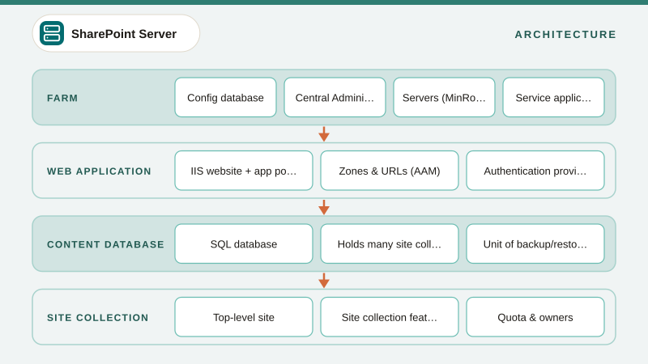

01
What is SharePoint On-Premises? Overview & When to Use It
SharePoint Server explained from the ground up, covering what it is, the building blocks, editions, how it differs from SharePoint Online, and when an on-premises farm still makes sense in 2026.